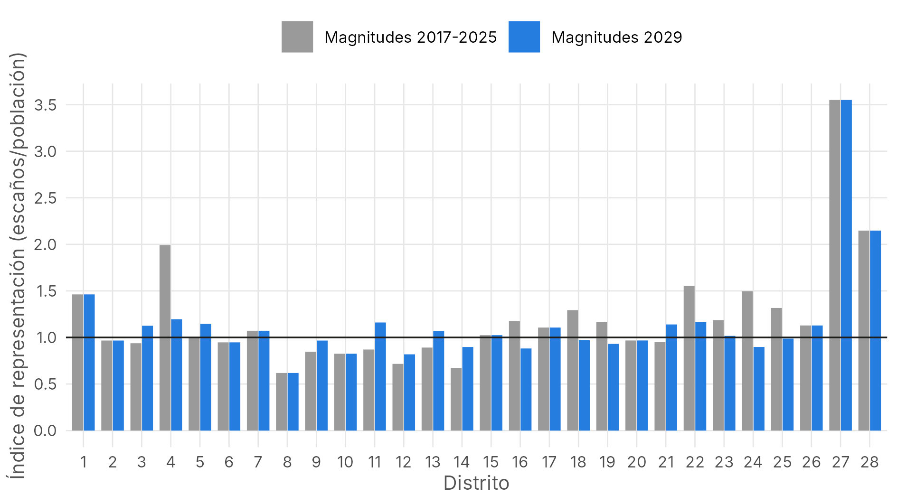
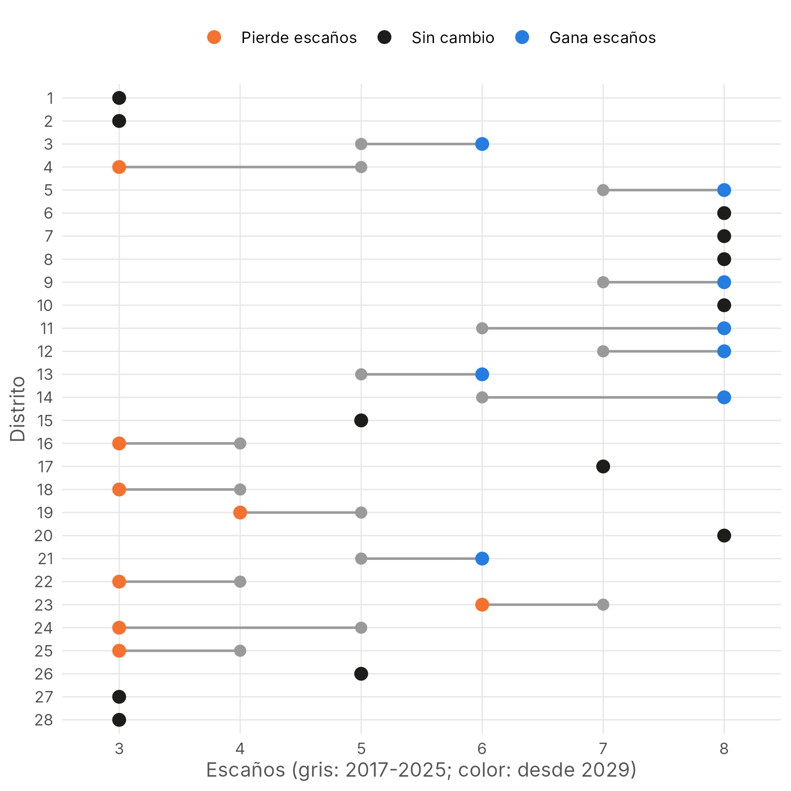
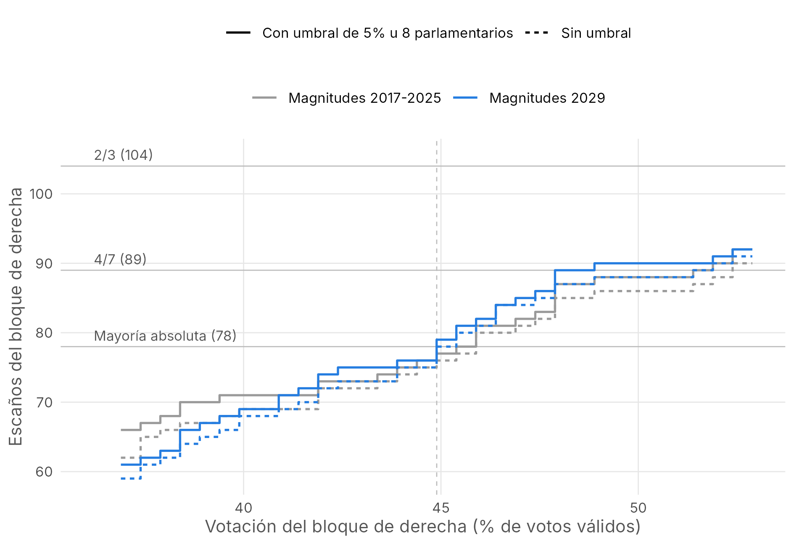

Los mismos votos, otra Cámara: la redistribución de escaños tras el Censo 2024 y sus efectos sobre la representación y los quórums
En abril de 2026, el SERVEL actualizó por primera vez la distribución de los 155 escaños de la Cámara de Diputadas y Diputados entre los 28 distritos, con la población del Censo 2024. La Resolución O-129 traslada diez escaños, siete de ellos a la Región Metropolitana, y rige desde la elección parlamentaria de 2029.
Este documento de trabajo pregunta qué cambia con esa redistribución si los votos se mantienen fijos. Separa el efecto mecánico de la nueva regla, que es el único atribuible a la resolución, de los cambios en candidaturas, pactos y preferencias que traerá la próxima elección. Esta entrada resume los hallazgos; el documento completo desarrolla el marco teórico, el método y las limitaciones.
Datos y métodos
El análisis usa los resultados oficiales de la elección de diputados de 2025 por candidato, la población censada por comuna en 2017 y 2024, los resultados de consejeros regionales y concejales de 2024 y las 1.566 votaciones nominales de la Cámara entre marzo y noviembre de 2026. Un algoritmo D'Hondt con los topes de candidatos de la ley reproduce los 155 electos de 2025 y la asignación de la Resolución O-129 en los 28 distritos. Con él se repite la elección con las magnitudes de 2029, se miden la mala distribución, la desproporcionalidad, el número efectivo de partidos y el umbral efectivo, y se simulan desplazamientos uniformes de votos entre bloques frente a los quórums de la Cámara. El poder de cada bloque se mide con el índice de Banzhaf, y el comportamiento del PDG, con su coincidencia de voto con cada bloque. Todo el procesamiento es reproducible en R.
Cinco hallazgos
1. La desigualdad del voto baja, pero no desaparece
La mala distribución baja de 10,6% a 7,5% de los escaños. Sin los límites legales de tres y ocho escaños por distrito, la misma población permitiría llegar a 3,2%. Los distritos de Aysén y Magallanes conservan más del doble de la representación que les correspondería por población, mientras que el distrito 8, en la Región Metropolitana, sigue con cerca de seis décimas de la suya.

2. Una Cámara de extremos
Los distritos de tres escaños pasan de 4 a 10 y los de ocho, de 5 a 10. Desde 2029, 80 de los 155 diputados se elegirán en distritos de ocho escaños. La proporcionalidad agregada casi no cambia, pero el umbral efectivo se separa más entre distritos pequeños y grandes.

3. Diez diputados salen y diez entran
Con los mismos votos de 2025, diez diputados electos perderían su escaño y diez candidatos lo ganarían. El efecto neto por bloque es pequeño, pero lleva a la derecha de 76 a 78 escaños, exactamente la mayoría absoluta. El Partido de la Gente, que no se declara oficialista ni opositor, deja de ser decisivo en esas votaciones, y su índice de poder de Banzhaf baja de un tercio a cero. Las votaciones nominales de 2026 confirman su papel actual de bisagra, porque coincide por igual con ambos bloques y sus votos decidieron 131 votaciones disputadas.
4. Un premio mayor para el bloque que gana
La curva entre votos y escaños se vuelve más empinada. Cada punto de votación adicional rinde más escaños al bloque que gana, y la receptividad sube de 1,37 a 1,53.

5. El umbral de 5% amplifica el efecto
Con las nuevas magnitudes y el umbral de 5% u ocho parlamentarios que propone el Boletín N.° 17.253-07, la derecha llegaría a 79 escaños y necesitaría 47,9% de los votos para alcanzar los cuatro séptimos de una reforma constitucional, frente al 52,4% que requiere con las reglas vigentes. Los umbrales de afiliación de la reforma al sistema de partidos, en cambio, afectan sobre todo al bloque de centro e izquierda.

Consejeros regionales y concejales
El Censo 2024 también modifica los consejos regionales. El total de consejeros sube de 302 a 306, porque Coquimbo pasa de 16 a 20, y cambia el reparto en Llanquihue, Osorno, Punilla e Itata. En los concejos municipales, que dependen del número de electores, solo Alto Hospicio y Chiguayante cambiarían de tramo con el padrón de 2025.
Alcance
La simulación mantiene fijos los votos de 2025, de modo que mide el efecto mecánico de la redistribución y no los cambios en candidaturas, pactos y preferencias que traerá 2029. Los bloques se definen por los pactos electorales, y la clasificación ideológica de cada partido se justifica con literatura en el documento. Algunos diputados cambiaron de partido después de la elección, lo que se informa pero casi no altera las medidas agregadas. Los datos y el código son públicos, de modo que el análisis puede actualizarse con nuevas votaciones o con las reformas que apruebe el Congreso.
Cómo citar
Bottinelli Baltra, L. (2026). Los mismos votos, otra Cámara: la redistribución de escaños tras el Censo 2024 y sus efectos sobre la representación y los quórums (Documento de trabajo N.° 7). https://doi.org/10.5281/zenodo.24575197
El código en R y los datos procesados están archivados en Zenodo, en https://doi.org/10.5281/zenodo.24575171.
← Volver al blog